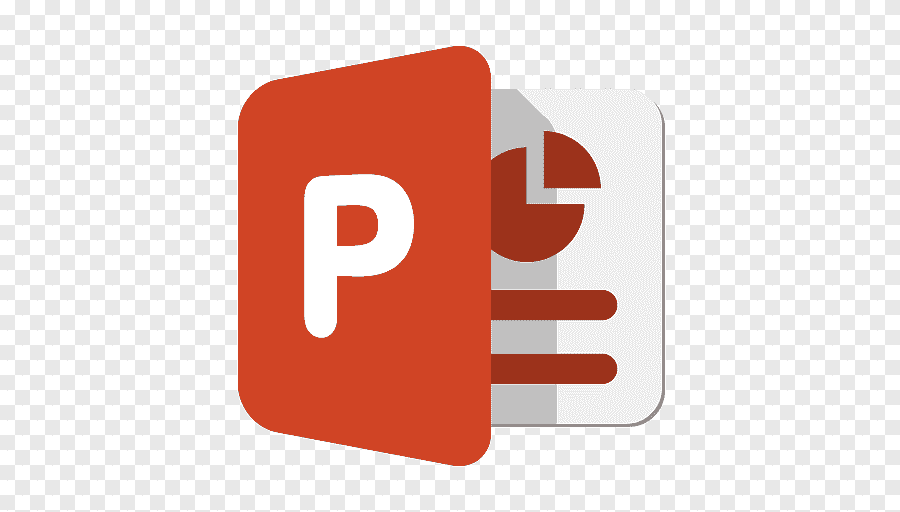
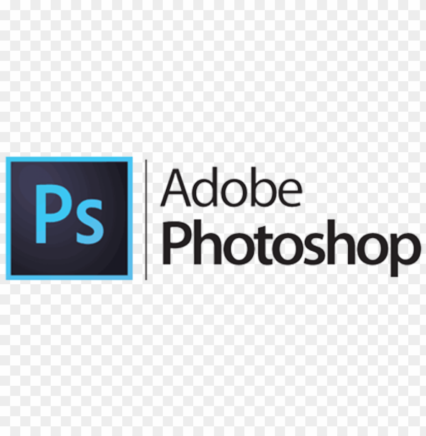

Microsoft Excel
Capable of organizing records, preparing tables, encoding information, and managing spreadsheets with attention to detail. I use Excel to keep data neat, accessible, and easy to review for reporting and office tasks.
These tools reflect my practical strengths in documentation, presentations, data organization, and creative visual editing, helping me support daily tasks with accuracy, clarity, and professionalism.
Capable of organizing records, preparing tables, encoding information, and managing spreadsheets with attention to detail. I use Excel to keep data neat, accessible, and easy to review for reporting and office tasks.

Experienced in creating clean documents, formatting reports, and preparing written materials for school and workplace needs. I focus on producing documents that are polished, readable, and professionally presented.

Comfortable building clear and engaging presentations that communicate ideas effectively. I pay attention to structure, visuals, and flow so that each presentation looks organized and easy to understand.

Skilled in basic photo editing, layout improvement, and visual enhancement for creative and academic projects. I use Photoshop to produce simple yet attractive graphics with a balanced and professional look.